100개 중 남긴 7개, 그리고 shaders
발표자는 GitHub 오픈소스를 100개 넘게 깔아 봤지만, 지금까지 남은 건 일곱 개뿐이라고 해요. 새 도구가 매주 쏟아지니 무엇부터 깔지 고르기 어렵고, 깔아도 실제 작업에 못 쓰면 며칠 안에 다시 지우게 되거든요. 첫 화면의 큰 숫자 878,089가 일곱 저장소의 별을 합친 값이고, 아래 일곱 칸이 오늘 소개할 순서예요. 별이 적은 shaders에서 시작해 가장 많은 REA로 끝나요.
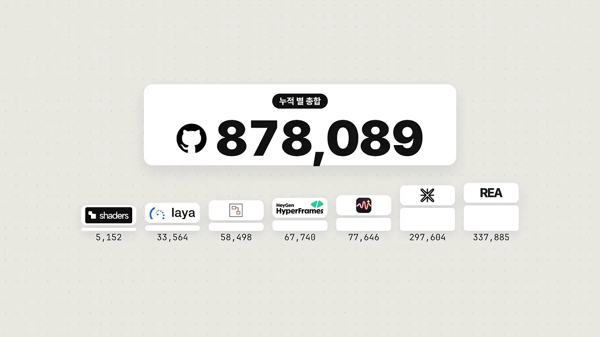
설치 방법은 일곱 개 모두 같아요. 저장소 주소를 Claude Code나 Codex에 주고 "깔아 줘"라고 하면 내 컴퓨터에 바로 설치돼요. 그다음 하고 싶은 일을 한 문장으로 이어서 말하면 돼요.
shaders: 첫 화면에 움직이는 빛 배경
첫 번째는 홈페이지 배경에 움직이는 빛 효과를 넣어 주는 shaders예요. 발표자가 예로 든 건 동네 카페 'Moonlight Cafe' 홈페이지예요. 아래 화면처럼 처음엔 흰 바탕에 제목과 메뉴 세 칸만 있는 밋밋한 첫 화면이에요.
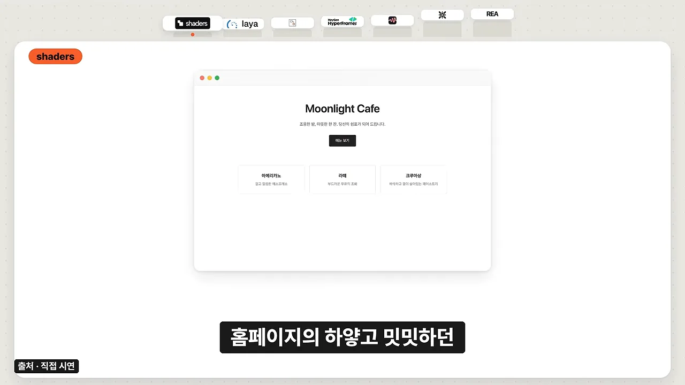
Claude Code에 shaders 저장소 주소를 주고 깔아 달라고 한 뒤, 아래 터미널처럼 "매장 홈페이지 대문에 이 조명 깔아 줘"라고 이어서 말해요. Codex에서도 같은 말로 시키면 된다고 해요.
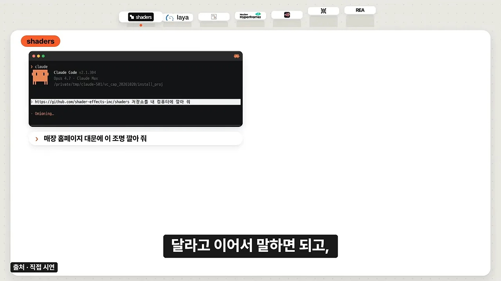
기본으로 주는 효과만 200개가 넘어서 가게 분위기에 맞는 걸 고를 수 있어요. 왼쪽은 shaders.com 화면으로 React, Vue, Svelte, Solid에서 쓰는 WebGPU 효과라고 소개하고, 오른쪽은 고를 수 있는 효과 견본이에요. 색이나 움직이는 속도는 무료 편집기 shaders.com에서 화면을 보며 조절해요.
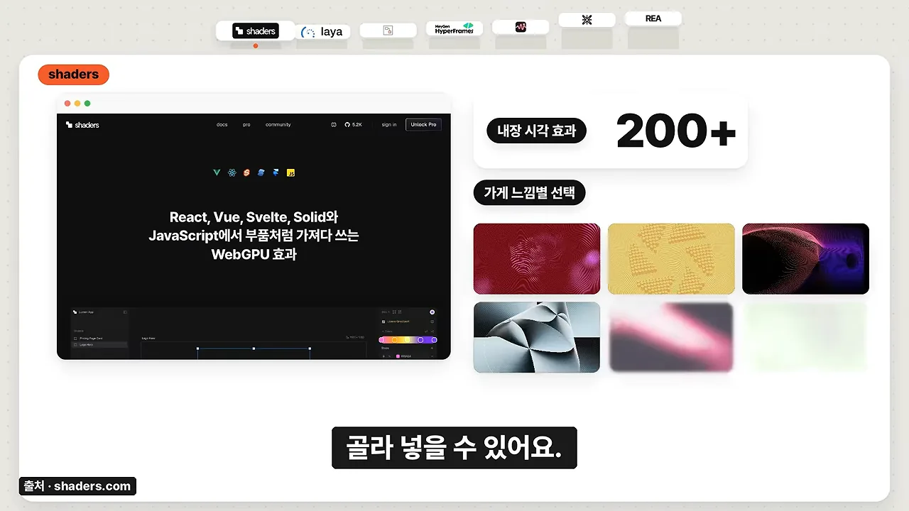
결과가 아래 화면이에요. 같은 카페 첫 화면 위쪽이 갈색과 금빛이 흐르는 배경으로 바뀌었어요. 별은 5,152개로 일곱 중 가장 적지만, 한 달에 115만 번 내려받아요. 발표자가 남겨 둔 이유는 요청 한 문장이면 허전한 첫 화면이 훨씬 비싸 보이게 바뀌기 때문이에요.
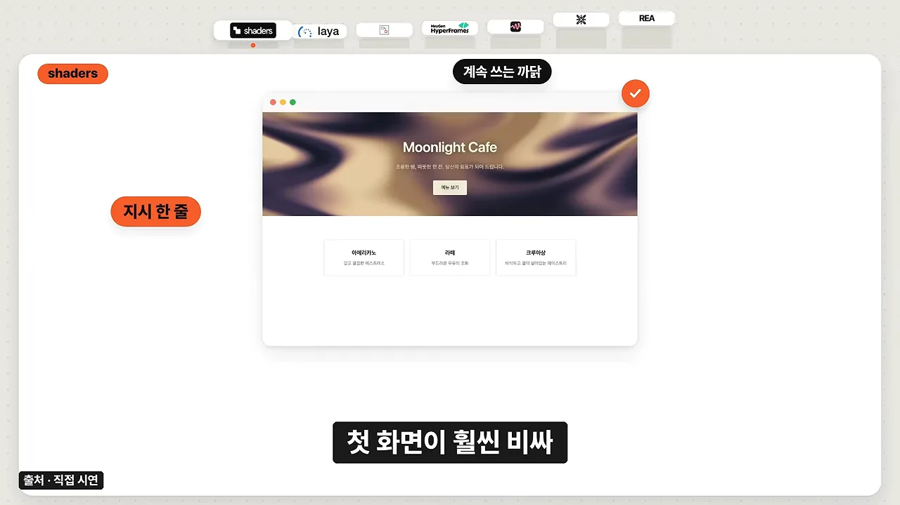
글을 나누고 도식으로 바꾸기: laya · diagram-design
laya: 밀린 댓글과 문의 글을 내 컴퓨터에서 분류
laya는 100개가 넘는 언어로 쓴 메일, 댓글, 문의 글을 내 컴퓨터에서 무료로 빠르게 분류하는 오픈소스 AI예요. 아래 GitHub 화면의 한 줄 소개가 핵심이에요. 한 번의 연산으로 100개 넘는 언어를 처리하는 판정, 33ms. 오른쪽 '100+ 다국어 지원', '개인 컴퓨터 구동' 표시가 발표자가 강조한 두 가지예요.
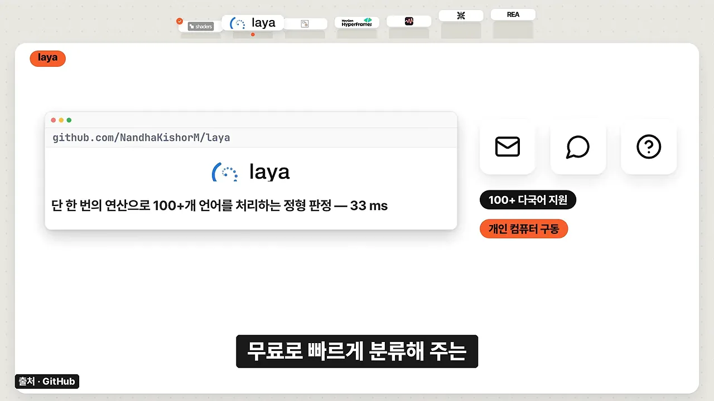
발표자는 Hugging Face 데모에 자기 영상 댓글을 넣어 봤어요. 왼쪽 댓글 세 줄이 화살표를 따라 질문 모음, 칭찬 모음, 요청 모음으로 갈라지고, 오른쪽에 건당 분류 시간 0.033초가 보여요. 9월에 공개돼 한 달 만에 별 3.3만 개를 모았고, 한 달에 27만 번 넘게 내려받아요.
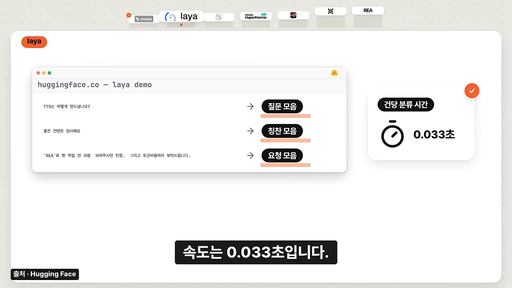
diagram-design: 한 문장으로 흐름도와 타임라인
diagram-design은 코딩 에이전트에 깔아 두고 한 문장만 치면 도식을 HTML(HyperText Markup Language) 파일 하나로 그려 주는 스킬이에요. 발표자는 물류 창고의 입고부터 검수, 출고까지의 순서를 한글 한 문장으로 적었어요. 아래가 그 결과인 warehouse_flow.html이에요. 상자와 마름모(판단)가 위에서 아래로 이어지는 흐름도예요.

흐름도만 되는 게 아니에요. 아래 diagramdesign.dev 화면 오른쪽에 업무 흐름도, 비교 사분면, 일정 타임라인 세 가지가 예로 나와요. 모두 한 문장으로 그려요.
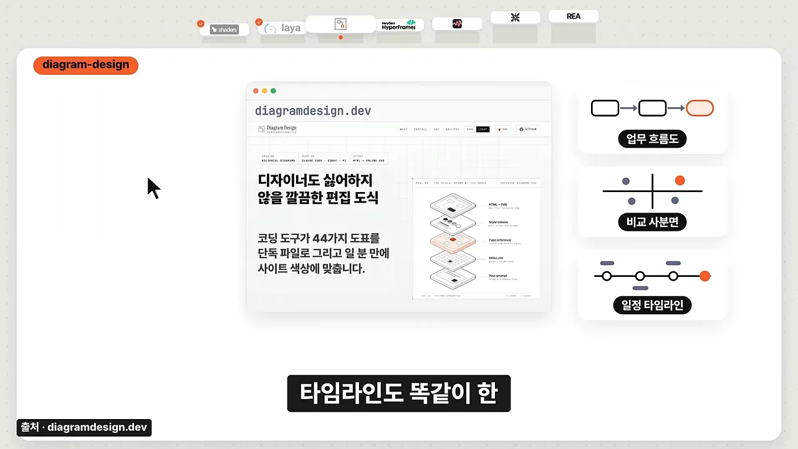
골라 쓸 수 있는 도식이 40가지가 넘어요. 아래 화면 아래쪽의 Onboard diagram-design to https://yoursite.com처럼 회사 사이트 주소를 한 번 알려 주면, 그 사이트의 글꼴과 배색을 가져와 이후 도식을 모두 회사 색으로 맞춰요. 따로 색을 칠하거나 글꼴을 고칠 필요가 없어요. 별은 5.8만 개예요.
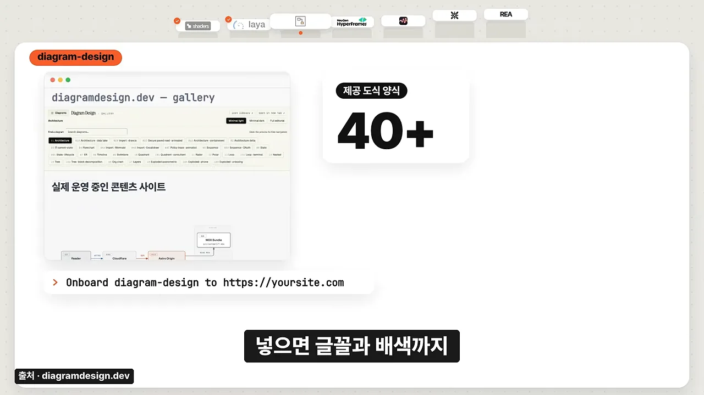
영상과 목소리 만들기: HyperFrames · VoiceStudio
HyperFrames: 홈페이지 주소로 소개 영상
HyperFrames는 HTML로 쓴 화면을 그대로 MP4(MPEG-4 Part 14) 영상으로 뽑아 주는 저장소예요. 발표자는 학원 홈페이지 주소와 함께 소개 영상을 만드는 명령을 바로 넣었어요. 아래 터미널에 http://localhost:8765와 /product-launch-video 두 가지가 보여요.
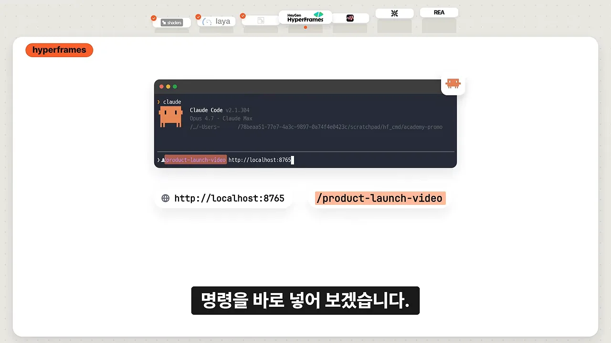
/product-launch-video 하나예요.
영상 04:03에서 보기
그러면 원래 홈페이지 화면을 바탕으로 학원 겨울 특강 소개 영상이 내 컴퓨터에서 완성돼요. 아래는 그 영상 속 한 장면인 '개설 강좌 안내'예요. 오른쪽 아래 '후보정 없는 완성본' 표시처럼, 따로 편집하지 않았는데도 화면 전환이 꽤 자연스러웠다고 해요.
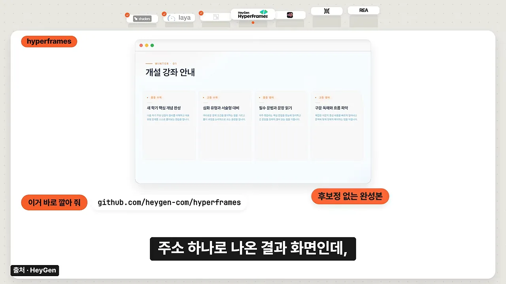
별은 67,740개(약 6.8만)이고, 오른쪽 큰 숫자처럼 한 달 설치 횟수는 2,712,707번이에요. 일곱 개 중 내려받기가 가장 많아요. 발표자도 홍보 영상이 필요할 때마다 홈페이지 주소만 넣어 바로 만들어요.
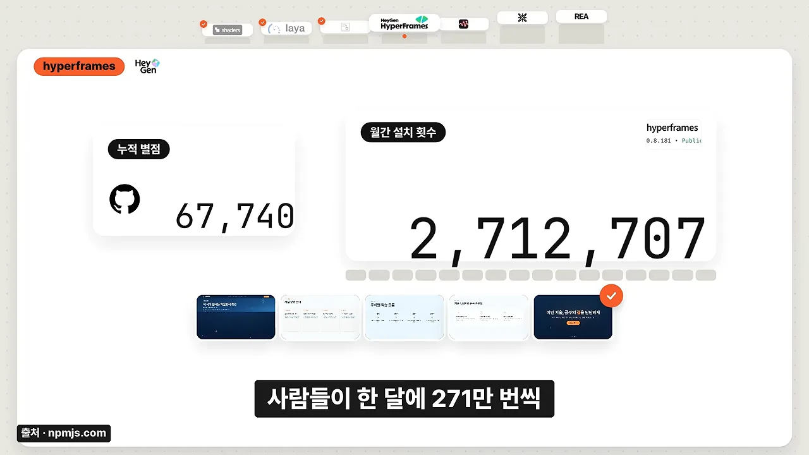
VoiceStudio: 내 목소리 복제와 더빙
VoiceStudio는 내 컴퓨터에서 무료로 목소리를 복제하고 영상 더빙, 오디오북까지 만드는 도구예요. 예는 병원 진료실 대기 안내 음성이에요. 아래 화면 오른쪽 순서처럼, 처음 한 번만 내 목소리 샘플을 등록해 두면 그다음엔 대본만 바꿔 넣으면 돼요.
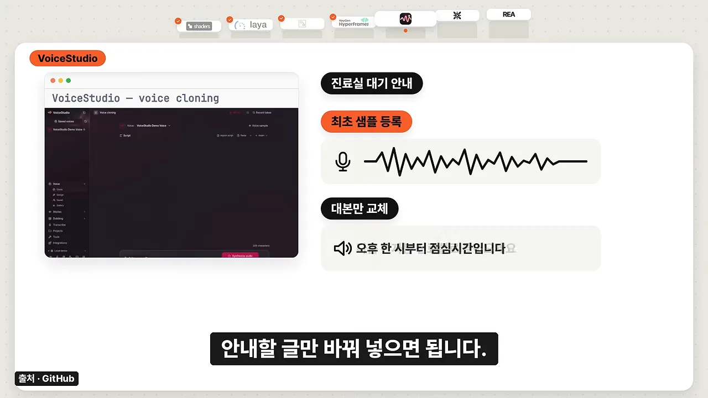
같은 목소리로 영어, 일본어를 포함해 646개 언어로 안내 음성이나 영상을 더빙할 수 있어요. 아래 화면 오른쪽의 '지원 언어 수 646개'가 그 숫자예요. 맥(애플 실리콘), 윈도우, 리눅스에서 받아쓰기까지 무료로 돌아가고, 별은 약 7.8만 개예요.
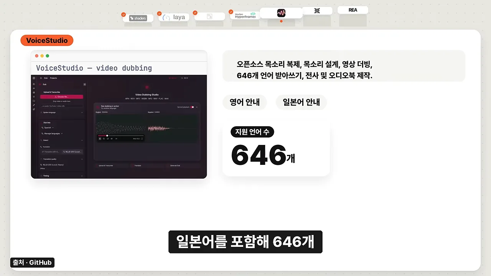
에이전트와 일하는 방식을 바꾸는 스킬: grill-me · REA
여기서부터 별의 자릿수가 달라져요. VoiceStudio가 7만 대였는데, 다음 mattpocock/skills는 297,604개로 30만에 가까워요.
grill-me: AI가 먼저 나에게 질문해요
발표자는 만들려던 가계부 앱 계획을 grill-me에 넣고 만들어 달라고 했어요. 그러자 AI가 일을 시작하는 대신 질문을 줄줄이 던졌어요. 아래 GitHub 화면의 /grill-me 설명이 바로 그 동작이에요. 설계 갈래가 모두 풀릴 때까지 계획이나 디자인을 두고 집요하게 심층 질문을 받는 스킬이에요.
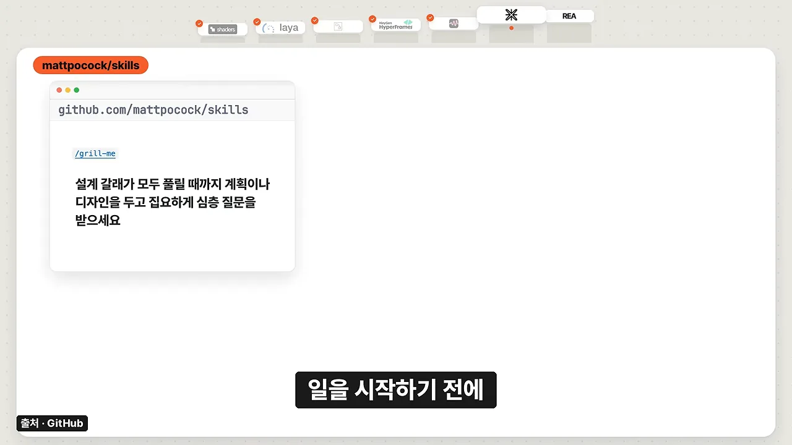
질문에 하나씩 답하다 보면 처음 계획에서 빠뜨린 게 보여요. 아래 화면 위쪽이 원래 계획(영수증 사진 촬영, 지출 내역 자동 기록, 휴대폰 가계부 앱)이고, 아래 주황 칸이 질문을 받고서야 드러난 조건이에요. 영수증 OCR(Optical Character Recognition) 처리 방식, 기록 전 사용자 확인 여부예요.
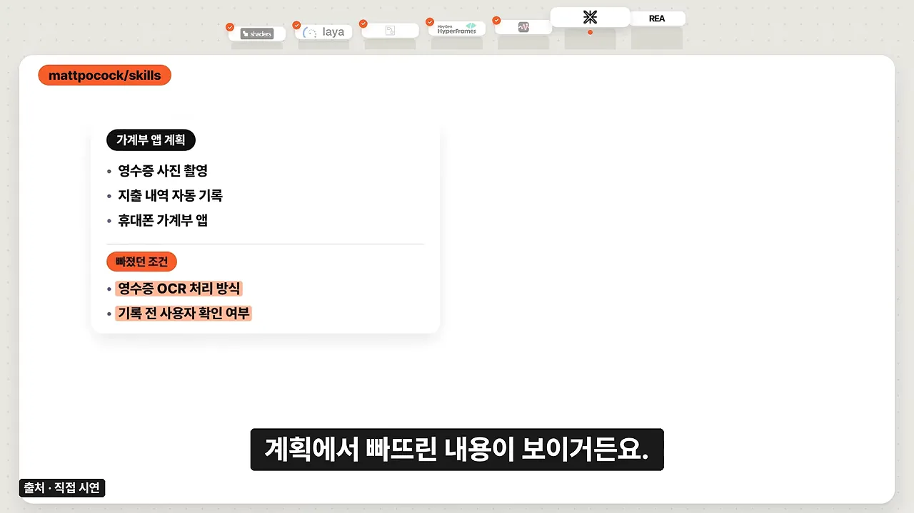
계획이 정리되면 handoff로 그 대화를 Codex 같은 다른 에이전트에 넘겨 바로 이어 가요. 아래 화면 뒤쪽 README에 /grill-me와 /grill-with-docs가 'my most popular skills'(가장 인기 있는 스킬)로 적혀 있고, 앞쪽에 /handoff와 '정리된 계획'이 겹쳐 있어요.
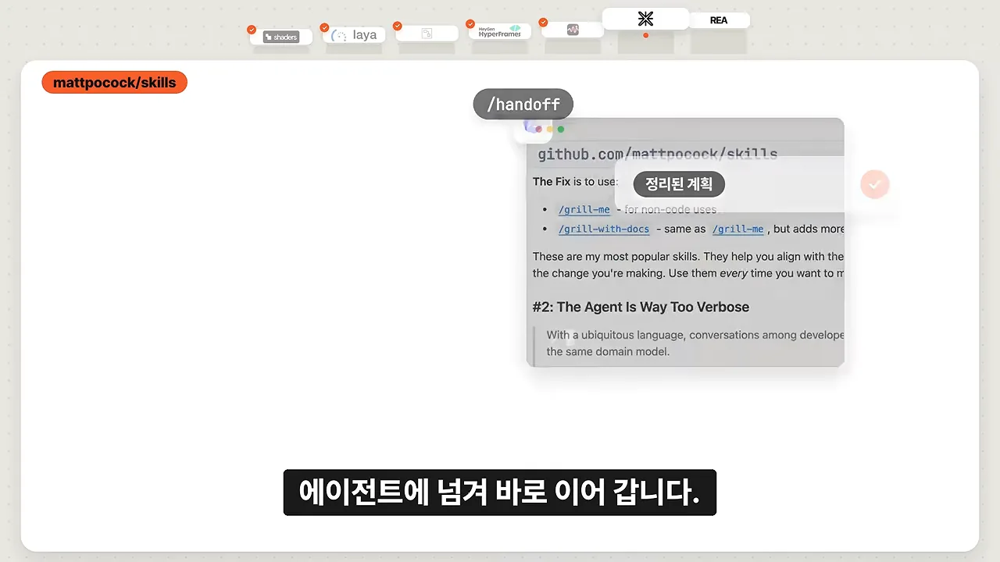
저장소에는 스킬 27개가 들어 있지만, 발표자는 grill-me와 handoff 두 개만으로 충분했다고 해요. 지금도 매일 쓰는 도구예요.
REA: 남이 만든 앱을 속까지 열어 보기
마지막은 일곱 개 중 별이 가장 많은 REA예요. 아래 rea.tools 첫 화면의 큰 문장 'Find out how software works.'(소프트웨어가 어떻게 돌아가는지 알아내요)가 하는 일이에요. 코딩 에이전트에게 앱, 게임, 웹사이트에 대해 물으면 REA가 그 뒤의 코드를 살펴볼 도구를 줘요.
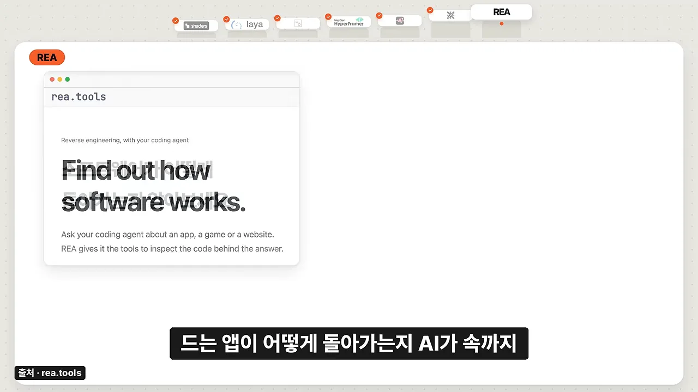
발표자가 든 사례는 둘이에요. 하나는 받아쓰기 앱 Typeless예요. 공개된 기록 영상을 보면 REA로 뜯어본 지 24분 48초 만에, 연 144달러짜리 유료 앱이 로그인과 구독이 없는 무료 맥 앱으로 다시 만들어졌어요. 아래 화면의 'REATypeless'가 그 결과물이에요.
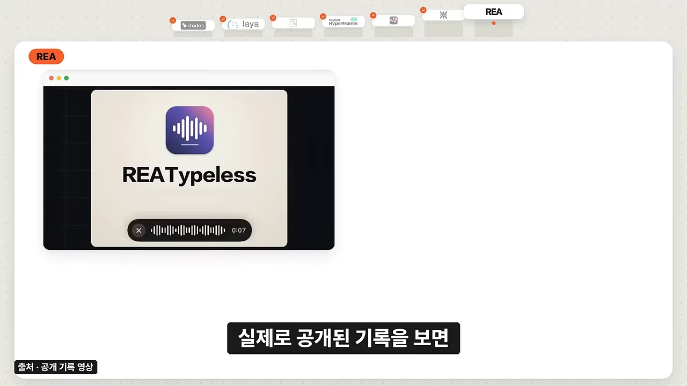
다른 하나는 영상 편집기예요. CapCut의 타임라인 구조를 REA로 연구해서 맥에서 바로 쓰는 새 편집기 '레아컷'이 나왔어요. 아래 오른쪽이 그 편집기 화면이고, 아래쪽 주황 막대가 타임라인이에요. REA는 한 주에 41만 번 넘게 내려받아요.
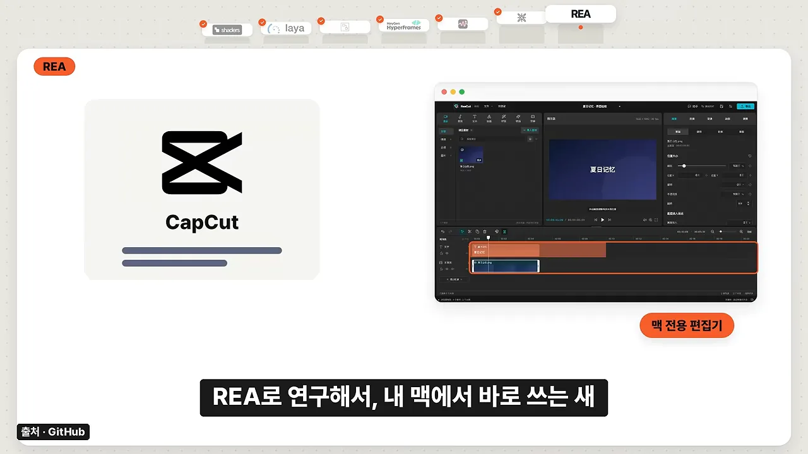
일곱 개 한눈에, 어디서 시작할까
마지막으로 발표자는 일곱 개를 다시 모아 보여 줘요. 별 합계는 878,089개이고, 모두 작업할 때 실제로 손이 가는 도구라고 해요. 영상에 나온 숫자를 한 표로 모으면 이래요.
| 도구 | 하는 일 | 별 (영상) | 내려받기 (영상) |
|---|---|---|---|
| shaders | 홈페이지 배경에 움직이는 빛 효과 | 5,152 | 한 달 1,153,278 |
| laya | 메일·댓글·문의 글을 내 컴퓨터에서 분류 | 33,564 | 한 달 272,233 |
| diagram-design | 한 문장으로 흐름도·사분면·타임라인 | 58,498 | — |
| HyperFrames | 홈페이지 주소로 MP4 소개 영상 | 67,740 | 한 달 2,712,707 |
| VoiceStudio | 목소리 복제, 646개 언어 더빙 | 77,646 | — |
| mattpocock/skills | grill-me로 질문받고 handoff로 넘기기 | 297,604 | — |
| REA | 남의 앱 구조를 열어 보고 다시 짜기 | 337,885 | 한 주 415,576 |
이 중 발표자가 매일 여는 건 grill-me예요. Claude Code나 Codex에 일을 시키기 전에 먼저 물어봐 주니까 늘 이걸로 시작한다고 해요.
일곱 개를 한꺼번에 깔 필요는 없어요. 아래 화면처럼 일곱 저장소 주소가 모두 공개돼 있으니, 지금 필요한 주소 하나만 Claude Code나 Codex에 주고 먼저 깔아 보라고 권해요.
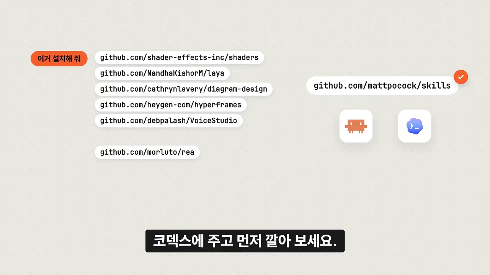